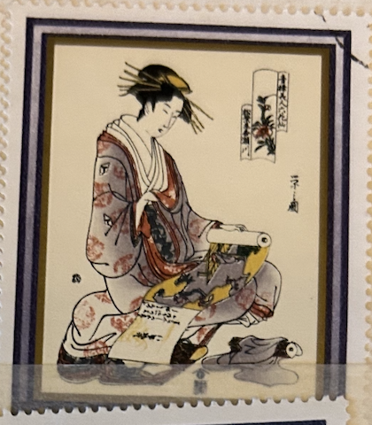
| SOURCE | TITLE| IMAGE MATCH | click to source page |
| www.alamy.com | Eishi hi-res stock photography and images - Alamy | 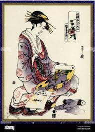 |
| www.etsy.com | Geisha Art Print: Japanese Painting on Hungary Stamp - Etsy | 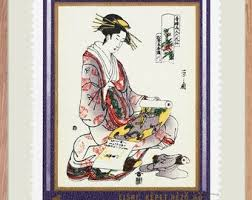 |
| www.buyhungarianstamps.com | 2077-2084 Hungary - Japanese Prints from Museum of East ... | 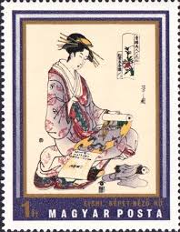 |
| www.metmuseum.org | Utagawa Toyokuni I - “The Geisha To'e as a Vendor of Poems ... | 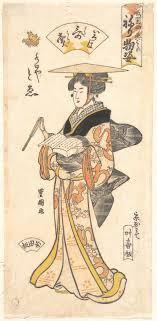 |
| www.ebay.com | A COMTESAN JAPANESE WOMEN WOODBLOCK STUDENT OF YEISHEN CIRCA ... | 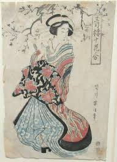 |
| www.istockphoto.com | Japanese Traditional Art On A Hungarian Stamp Stock Photo ... | 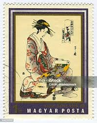 |
| woodblockprints.org | Lyon Collection : Print : Kisegawa of the Matsubaya House ... | 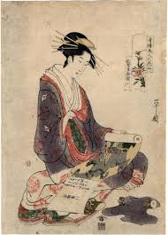 |
| antiquearena.com | Lot 249 | AFTER KITAGAWA UTAMARO INK AND WATERCOLOR PAINTING | 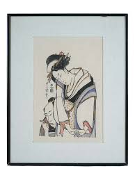 |
| www.simpsongalleries.com | Lot - TWO JAPANESE UKIYO-E BIJIN-GA 'BEAUTIFUL WOMEN ... | 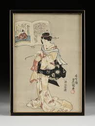 |
| honolulu.emuseum.com | Modern Reproduction of: Beauty – Works – Honolulu | 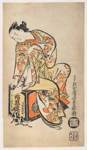 |
| miegallery.com | Japanese Woodblock Prints Grouping 3 – Mie Gallery | 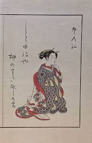 |
| www.pinterest.com | UKIYO - E.......BY CHOKOSAI EISHO...PARTAGE OF ARTIST SALON ... | 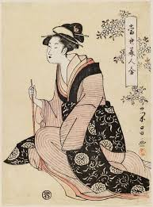 |
| www.ebay.com | Vintage Japanese Lady Gift Enclosure Card Text in Portuguese ... | 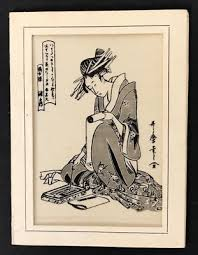 |
| www.alamy.com | EISHI kepet nezo no Stock Photo - Alamy | 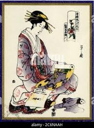 |
| www.rubylane.com | Japanese UKIYO-E Matchbox Matchbook UTAMARO Japan Geisha ... | 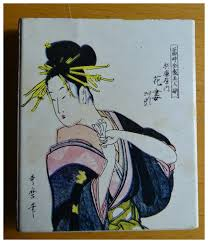 |
| honolulu.emuseum.com | Modern Reproduction of: Courtesan With Cat – Works – Honolulu | 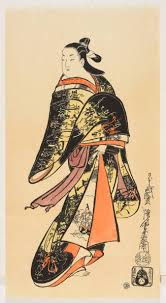 |
| shogunsgallery.com | Original Japanese Woodblock Print: By Eisen (1790-1848 ... | 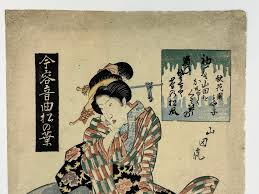 |
| www.mutualart.com | Isoda Koryusai | Hinagata wakana no hatsu moyo (1777 - 1778 ... | 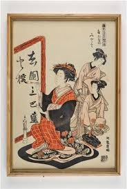 |
| www.mayfairgallery.com | Set of eight Japanese Meiji period woodblock prints ... |  |
| egenolfgallery.com | Utamaro 歌麿: Courtesan writing letter and companion; Hour ... | 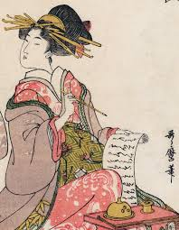 |
| www.invaluable.com | Sold at Auction: AFTER KITAGAWA UTAMARO INK AND WATERCOLOR ... | 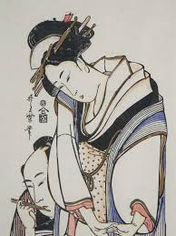 |
| www.artic.edu | The Actor Nakamura Tomijuro I as Omi no Okane in the play ... | 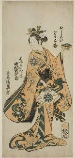 |
| www.metmuseum.org | Torii Kiyomasu I - Courtesan from the Myōgaya House - Japan ... | 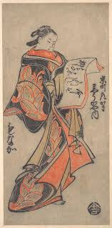 |
| allenartcollection.oberlin.edu | Nishikawa Sukenobu 西川祐信 – Artists – Allen Memorial Art ... | 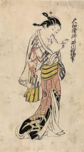 |
| www.fontainesauction.com | Lot - Kaigetsudo Dohan (Japanese, active 1710-16) | 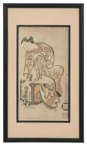 |
| murinotattoos.com | Why Geisha Tattoos Have Become a Modern Symbol of Femininity ... | 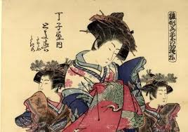 |
| www.fujiarts.com | Kunisada (1786 - 1864) Fujiwara no Sanekata ason, Poet No ... | 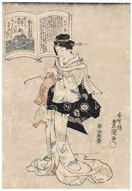 |
| chidorivintage.com | Japanese Woodblock Print Vtg Barefoot Woman Kimono Ukiyoe ... | 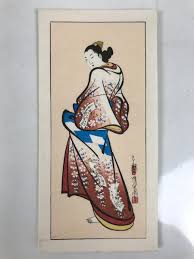 |
| www.artelino.com | Hosoda Eishi (Chobunsai) - Ukiyo-e of Beauties | 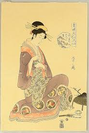 |
| www.etsy.com | Japanese Woodblock Print by Katsukawa Shunshō - Geisha ... | 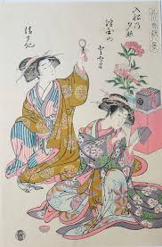 |
| www.waddingtons.ca | Asian Art - Begins closing: April 06, 2023 AT 2:00 PM - Lot ... | 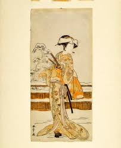 |
| patchcollection.com | Japanese Art Geisha Woman FotoPatch Jacket XL Embroidered ... | 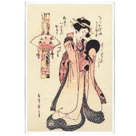 |
| www.japanhousela.com | The History of Woodblock Printing in Japan | JAPAN HOUSE Los ... | 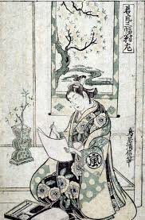 |
| www.kunisada.de | Utagawa Kunisada (Toyokuni III) 100-bijin-poets-2 | 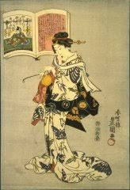 |
| en.wikipedia.org | Koryūsai - Wikipedia | 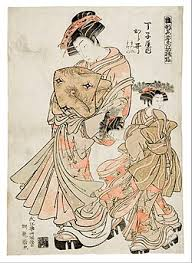 |
| www.sothebys.com | Kikugawa Eizan (1787-1867) Utagawa Kunisada (1786-1865 ... | 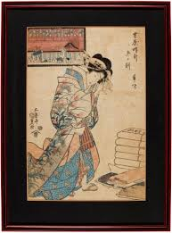 |
| egenolfgallery.com | Isoda Koryūsai: Courtesan Reading (Sold) – Egenolf Gallery ... | 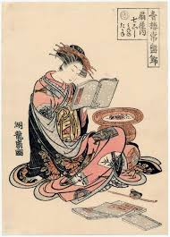 |
| diluo.digital.conncoll.edu | Androgyny in Japanese Artwork – Asian Art and Architecture | 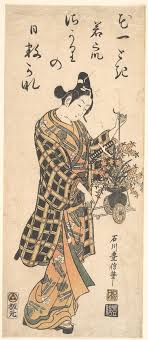 |
| www.viewingjapaneseprints.net | Viewing Japanese Prints: Torii Kiyomasu I (一代目 鳥居清倍) | 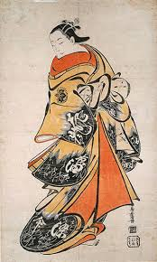 |
| ukiyo-e.org | Japanese Print "The Actor Yoshizawa Ayame IV as Yadorigi ... | 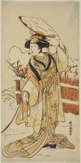 |
| www.boutiquesdemusees.fr | Jeune femme se fixant un peigne dans les cheveux (toiles sur ... | 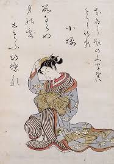 |
| woodblock-print.eu | Katsukawa SHUNSEN (1762– c. 1830) | 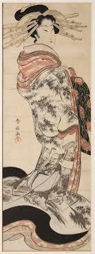 |
| www.instagram.com | This 19th-century woodblock print is called Ochanomizu in ... | 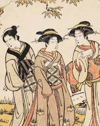 |
| itoldya420.getarchive.net | Crouching lady, hand to chin, Harunobu Suzuki, Woodblock ... | 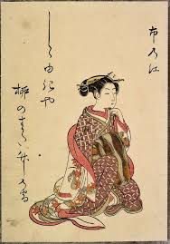 |
| www.asianart.com | The Printer's Eye: Ukiyo-e from the Grabhorn Collection | 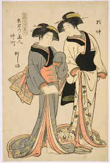 |
| www.mutualart.com | Kitao Masanobu | Untitled (1761) | MutualArt | 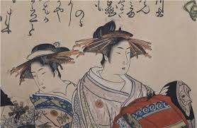 |
| www.artheroes.com | Japanese art. Japanese woman by Katsushika Hokusai. Vintage ... | 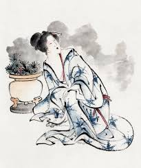 |
| www.artelino.com | Value of Japanese Prints - Factors That Determine Worth ... | 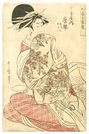 |
| www.facebook.com | Woman Looking at Herself in a Mirror', ca. 1805 (an Edo ... | 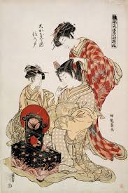 |
| shop.ellisantique.com | Antique Japanese Edo Art Woodblock Print Pair Ukiyo-e Women ... | 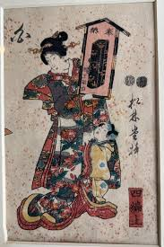 |
| www.ebay.com | Japanese Woodblock Print | eBay | |
| nouvelleartsite.wordpress.com | Courtesans, Kabuki, and Geisha: The Rise of Celebrity in ... | |
| napost.com | Washin Kai's Upcoming Event featuring Joshua Mostow, Ph.D. | |
| www.pinterest.com | Japanese Art Postage Stamps // Hungary 1971 Used Vintage ... | |
| www.bridgemanimages.com | Image of Saigyo Hoshi, 18th century (woodblock print on ... | |
| www.sothebys.com | Hosoda Eishi (1756-1829) | The courtesan Morokoshi of the ... | |
| ukiyoereproduction.com | Shimoi's Ukiyo-e Reproduction — Restorative Reproducing of ... | |
| www.avsjapaneseart.com | Artworks | Anastasia von Seibold Japanese Art | |
| www.rubylane.com | Vintage Japanese Woodblock Prints 4 Geisha Girl Figures ... |